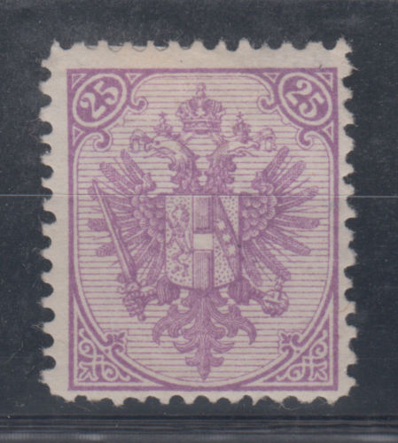
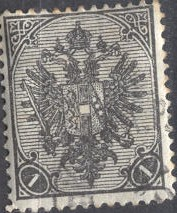
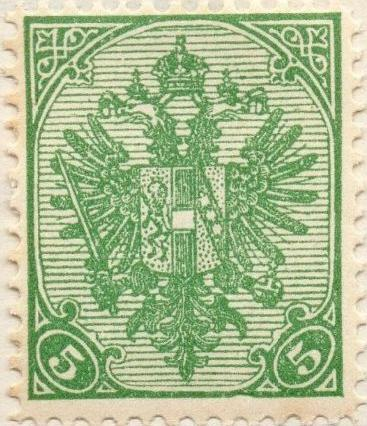
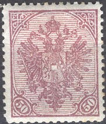

Return To Catalogue - Bosnia and Herzegowina part 2 - Part 3 - Part 4 - Yugoslavia - Yugoslavia, issues for Bosnia and Herzegowina
Note: on my website many of the
pictures can not be seen! They are of course present in the
catalogue;
contact me if you want to purchase the catalogue.
1/2 (Kr) black 1 (Kr) grey 2 (Kr) yellow 3 (Kr) green 5 (Kr) red 10 (Kr) blue 15 (Kr) brown 20 (Kr) green 25 (Kr) violet
Many different perforations exist, ranging from 9 to 12 1/2.
Value of the stamps |
|||
vc = very common c = common * = not so common ** = uncommon |
*** = very uncommon R = rare RR = very rare RRR = extremely rare |
||
| Value | Unused | Used | Remarks |
| 1/2 k | ** | *** | 1894 |
| 1 k | * | * | |
| 2 k | * | * | |
| 3 k | * | * | |
| 5 k | * | c | |
| 10 k | * | * | |
| 15 k | * | * | |
| 20 k | *** | ** | 1893 |
| 25 k | *** | ** | |
(A postcard of 2 k in the same design, issued 1879)
Besides the above postcard of 2 k red, an envelope of 5 k red also exists (issued 1882). I have also seen postal stationery in the value 3 h green on blue.
Reprints exist of these stamps, they have perforation 12 1/2.



1 (h) black 2 (h) grey 3 (h) yellow 5 (h) green 6 (h) brown 10 (h) red 20 (h) red 25 (h) blue 30 (h) brown 40 (h) yellow 50 (h) lilac
These stamps are either perforated 12 1/2 (common), 10 1/2 (1 to 30 h only, * to ***), 6 (rare) and 6x12 (rare). Imperforate stamps also seem to exist.
Value of the stamps |
|||
vc = very common c = common * = not so common ** = uncommon |
*** = very uncommon R = rare RR = very rare RRR = extremely rare |
||
| Value | Unused | Used | Remarks |
| 1 h | c | c | |
| 2 h | c | c | |
| 3 h | c | c | |
| 5 h | c | c | |
| 6 h | c | c | |
| 10 h | c | c | |
| 20 h | RR | *** | |
| 25 h | c | c | |
| 30 h | RR | *** | |
| 40 h | RR | *** | |
| 50 h | * | * | |
Value in black


20 (h) red 30 (h) brown 35 (h) blue 40 (h) orange 45 (h) blue
These stamps are either perforated 12 1/2 (common), 6 (rare) and 12 1/2 x 6 (rare). Imperforate stamps also seem to exist.
Value of the stamps |
|||
vc = very common c = common * = not so common ** = uncommon |
*** = very uncommon R = rare RR = very rare RRR = extremely rare |
||
| Value | Unused | Used | Remarks |
| 20 h | c | c | |
| 30 h | c | c | |
| 35 h | c | c | |
| 40 h | c | c | |
| 45 h | * | c | |
I have seen postal stationery in the values 5 h green in the above design. I have also seen this 5 h green value with overprint 'K.U.K. FELDPOST'.
Forgeries, examples:
These forgeries can be recognised by looking at the tail of the eagle. It is ending slightly higher than in the genuine stamps, in the genuine stamp the tail touches the line of the frame around the central design. In these forgeries it ends one line higher. I have also seen the values 3 h yellow, 10 h red, 20 h red, 30 h brown, 40 h yellow and 50 h lilac. The perforation of the forgeries is often quite bad. I've also seen two imperforate 30 h forgeries (see image above).


1 K red 2 K blue 5 K green
Value of the stamps |
|||
vc = very common c = common * = not so common ** = uncommon |
*** = very uncommon R = rare RR = very rare RRR = extremely rare |
||
| Value | Unused | Used | Remarks |
| 1 K | * | * | |
| 2 K | * | * | |
| 5 K | *** | *** | |
Forgeries, example:
I have also seen the forged 5 K green. In the forgeries I have seen the perforation is quite bad. According to 'Focus on forgeries' the tongues of the eagles can be seen very clearly and are long in the genuine stamps (in the forgeries they are blur and short). In the arms in the central part the upper right triangle has 10 small dots (the forgeries have only 6 dots).


For more stamps of Bosnia and Herzegowina, click here for part 2.


{kind=link}
{kind=link}
{kind=link}